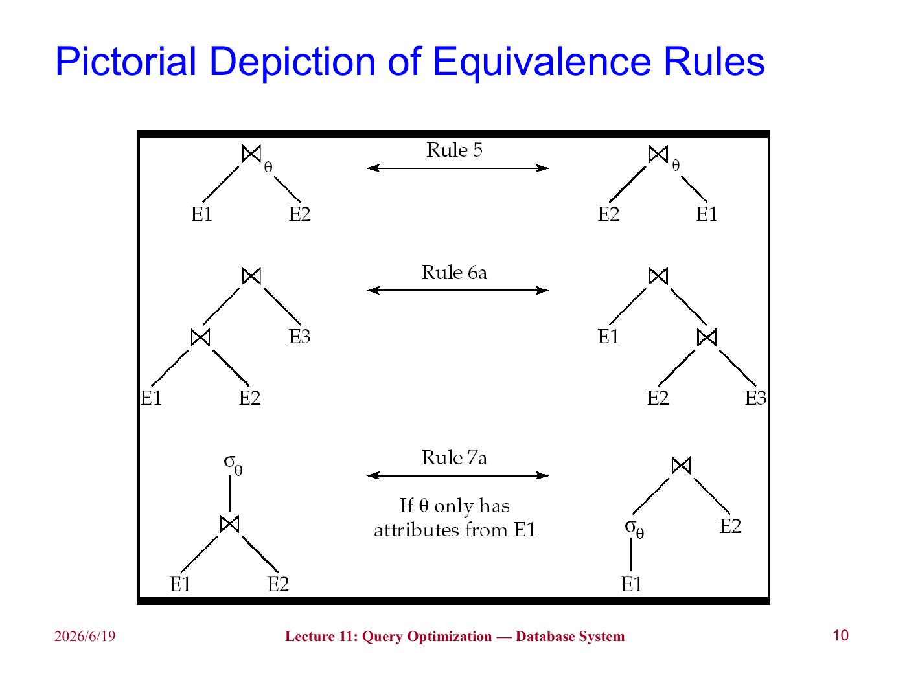
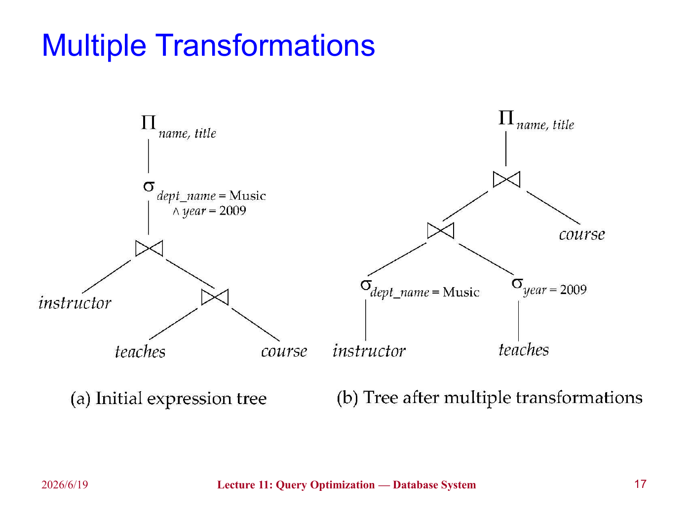
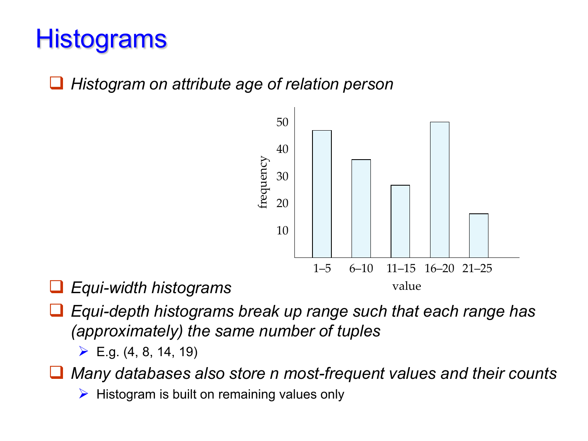
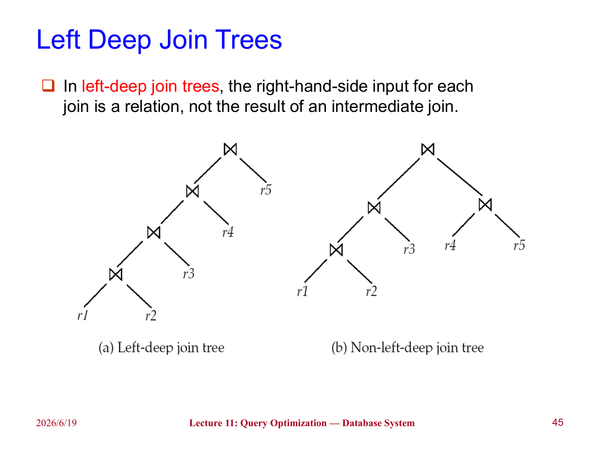

lec10 Query Optimization
上一章讨论的是：给定一个执行计划，某个选择、排序、连接操作可以如何执行，以及代价大概是多少。这一章继续往上走，讨论查询优化（Query Optimization）：同一条 SQL 往往可以有许多等价写法和执行方式，数据库系统需要在其中选一个代价较低的计划。
直观地说，查询优化器做的事情很像我们手写关系代数表达式时会做的化简：能先筛掉的先筛掉，能少带的属性就少带，连接顺序尽量让中间结果小一些。区别在于，数据库系统必须把这些想法形式化，并结合统计信息和代价模型自动作出选择。
Introduction¶
同一个查询可能有两类可替代方案：
- 等价的关系代数表达式不同；
- 每个关系代数操作对应的物理算法不同。
比如一个选择操作可以线性扫描，也可以走索引；一个连接操作可以用嵌套循环、归并连接或哈希连接。把逻辑表达式中的每个操作都标注上具体算法后，就得到了执行计划（Evaluation Plan）。
基于代价的查询优化一般分成三步：
- 用等价规则生成逻辑上等价的表达式；
- 给这些表达式标注具体算法，形成多个候选执行计划；
- 根据估计代价选择最便宜的计划。
Warning
“估计代价最低”不等于“真实运行一定最快”。优化器依赖统计信息和模型假设，如果统计信息过期，或者属性之间相关性很强，估计就可能偏离真实情况。不过在大多数复杂查询中，优化仍然非常值得，因为不同计划之间的差距可能是秒和天的差别。
Transformation of Relational Expressions¶
两个关系代数表达式如果在所有合法数据库实例上都产生相同结果，就称为等价。这里强调“合法”是因为数据库实例还要满足完整性约束；对于违反约束的奇怪实例，我们通常不要求等价规则仍然保持。
需要注意的是，关系代数默认结果是集合，而 SQL 默认结果更接近多重集（multiset）。因此在 SQL 优化中，有些集合语义下成立的变换，在多重集语义下要重新检查是否会改变重复元组的数量。
Equivalence Rules¶
等价规则（Equivalence Rules）给出了可以互相替换的表达式形式。下面列出最常用、也最有优化意义的一些。
选择操作的拆分和交换：
也就是说，一个复杂的选择条件可以拆成多个简单条件，并且这些选择的顺序可以交换。这是后面“选择下推”的基础。
投影操作的合并：
连续投影时，真正保留下来的只有最后需要的属性集合。这里要求 \(L_1\subseteq L_2\subseteq\cdots\subseteq L_n\)，否则外层投影需要的属性可能已经被内层丢掉。
选择和连接的结合：
这条规则的意义很直接：如果笛卡尔积后面立刻跟着连接条件，那么应该把它看成连接，而不是真的先产生巨大的笛卡尔积。
连接的交换律和结合律：
自然连接也满足结合律：
这说明连接顺序可以改变。连接顺序本身不改变最终结果，但会显著影响中间结果大小。
Pictorial Depiction of Equivalence Rules

Pushing Selections¶
选择下推（Pushing Selections）是最重要的启发式优化之一。它的基本想法是：如果选择条件只涉及某一个子表达式中的属性，就应该尽量把选择操作移动到这个子表达式上。
比如：
这里要求 \(\theta_0\) 只涉及 \(E_1\) 中的属性。这样做不会改变结果，但可以提前减少参与连接的元组数量。
考虑查询：找到 Music 系所有老师的姓名，以及他们教授课程的标题。原始表达式可以写成：
如果先把 instructor 和其它大关系连接，再筛选 Music 系，就会产生不必要的中间结果。更自然的方式是：
Note
选择下推并不是“永远越早越好”的机械规则。如果选择条件本身计算很昂贵，或者下推会破坏某些更有利的物理顺序，优化器仍然需要结合代价估计判断。不过在普通谓词上，它通常是非常有效的。
Multiple Transformations

Pushing Projections¶
投影下推（Pushing Projections）的想法是尽早丢掉后面不需要的属性。这样可以减小中间关系的元组长度，从而减少磁盘块数和内存占用。
比如某个中间关系的模式为：
但后面只需要 name 和 course_id 参与后续计算，那么就没必要一直带着 salary, sec_id, semester, year 这些属性。
需要注意的是，投影下推不能把连接条件要用的属性提前丢掉。假设最终只输出 \(L_1\cup L_2\)，但连接条件还需要 \(L_3,L_4\) 中的属性，那么下推时必须暂时保留这些属性：
其中 \(L_3\) 是 \(E_1\) 中参与连接但不在最终输出中的属性，\(L_4\) 是 \(E_2\) 中参与连接但不在最终输出中的属性。
Join Ordering¶
连接顺序（Join Ordering）是查询优化中最关键、也最容易爆炸的问题之一。对于三个关系：
这两个表达式结果相同，但中间结果可能差很多。如果 \(r_1\bowtie r_2\) 很小，而 \(r_2\bowtie r_3\) 很大，那么先做 \(r_1\bowtie r_2\) 往往更好。
Tip
一个很好用的直觉是：连接不只是看原关系大小，还要看连接后的选择性。两个大表如果连接条件非常强，结果可能很小；两个小表如果几乎做成笛卡尔积，结果反而可能很大。
Enumeration of Equivalent Expressions¶
理论上，优化器可以反复对所有子表达式应用所有等价规则，直到不再产生新表达式为止。但这个方法空间和时间代价都很高，因为等价表达式数量会迅速膨胀。
实际系统通常会：
- 共享公共子表达式，避免复制整棵表达式树；
- 检测重复生成的表达式；
- 用动态规划或记忆化搜索保存已经计算过的子问题；
- 用剪枝规则避免枚举明显不可能好的计划。
Statistics for Cost Estimation¶
优化器要比较计划，就必须估计每个计划的代价。代价估计依赖统计信息。设关系为 \(r\)，常见统计量包括：
| 记号 | 含义 |
|---|---|
| \(n_r\) | 关系 \(r\) 中的元组数 |
| \(b_r\) | 存放关系 \(r\) 的磁盘块数 |
| \(l_r\) | 关系 \(r\) 中一个元组的大小 |
| \(f_r\) | 一个磁盘块中能放下多少个 \(r\) 的元组 |
| \(V(A,r)\) | 属性 \(A\) 在关系 \(r\) 中不同取值的个数 |
| \(SC(A,r)\) | 属性 \(A\) 上等值选择平均能选出的记录数 |
如果关系 \(r\) 的元组在物理文件中连续存放，则通常有：
Histograms¶
只有 \(V(A,r)\) 还不够，因为它看不出数据分布是否均匀。比如年龄属性中，18-25 可能很多，80-90 可能很少。如果仍然假设所有值均匀分布，选择率估计就会偏。
直方图（Histogram）用若干区间记录属性值的分布。常见形式包括：
- 等宽直方图（Equi-width Histogram）：每个区间宽度相同；
- 等深直方图（Equi-depth Histogram）：每个区间包含的元组数大致相同。
Histograms

Warning
统计信息通常来自抽样，而且可能过期。因此数据库系统常常需要 analyze 之类的命令来更新统计信息，有些系统也会在表大小变化到一定比例后自动更新。统计信息不准，是优化器选错计划的常见原因。
Selection Size Estimation¶
对于等值选择：
若 \(A\) 不是键属性，并且假设 \(A\) 的取值均匀分布，则结果大小估计为：
如果 \(A\) 是键属性，则最多只有一条记录满足条件，估计大小为 1。
对于范围选择：
如果目录中有属性 \(A\) 的最小值 \(min(A,r)\) 和最大值 \(max(A,r)\)，并且假设值均匀分布，那么满足条件的元组数 \(c\) 可以估计为：
如果没有任何统计信息，课件中给出的粗略估计是 \(n_r/2\)。
Note
这个范围估计隐含了一个很强的均匀分布假设。现实中属性值经常倾斜，比如成绩、收入、访问量都可能有明显长尾。因此有直方图时，应该优先用直方图细化估计。
Complex Selections¶
设条件 \(\theta_i\) 在关系 \(r\) 上能选出 \(s_i\) 个元组，则其选择率为：
对于合取条件：
如果假设各条件相互独立，则结果大小估计为：
对于析取条件：
估计结果为：
对于否定条件：
Warning
独立性假设并不总可靠。比如 dept_name='Music' 和 building='Arts' 可能高度相关，把它们当成独立事件会低估或高估结果大小。这也是查询优化难的原因之一。
Join Size Estimation¶
设关系 \(r(R)\) 和 \(s(S)\) 做自然连接。若 \(R\cap S=\emptyset\)，自然连接退化为笛卡尔积，结果元组数为：
如果公共属性是某一边的键，则连接大小会受到明显限制。比如 \(R\cap S\) 是 \(R\) 的键，那么 \(s\) 中每个元组最多匹配 \(r\) 中一个元组，因此结果大小不超过 \(n_s\)。
如果 \(R\cap S=\{A\}\)，且 \(A\) 不是任一边的键，可以用如下估计：
或者从另一边看：
通常取二者较小值作为估计：
这里的直觉是：公共属性的不同值越多，每个值对应的匹配元组通常越少，连接结果也越小。
student 和 takes 的连接
课件中的例子有：
如果不用外键信息，则两个估计分别是：
取较小值为 10000。若知道 takes.ID 是引用 student.ID 的外键，也能直接得到连接结果大小是 \(n_{takes}=10000\)。
Other Operations¶
投影和聚合的结果大小通常与不同值个数有关：
如果按属性 \(A\) 分组聚合，那么分组数也可以估计为 \(V(A,r)\)。
集合操作的估计通常比较粗糙。对于不同关系上的集合操作，课件给出一些上界式估计：
- \(|r\cup s|\le |r|+|s|\)；
- \(|r\cap s|\le \min(|r|,|s|)\)；
- \(|r-s|\le |r|\)。
这些估计不一定准，但能给优化器一个保守的规模判断。
Dynamic Programming for Choosing Evaluation Plans¶
连接顺序的数量非常大。对于 \(n\) 个关系，所有可能连接树的数量增长很快。课件中提到，当 \(n=7\) 时就有 665280 种连接顺序，当 \(n=10\) 时超过 1760 亿。
因此优化器不可能简单枚举全部顺序。动态规划（Dynamic Programming）的核心思想是：任意一个关系子集的最优连接计划只计算一次，之后重复使用。
设 \(S\) 是一组关系。为了求 \(S\) 的最优计划，可以枚举所有非空真子集 \(S_1\)，把计划看作：
递归求出 \(S_1\) 和 \(S-S_1\) 的最优计划，再加上二者连接的代价，选择总代价最小的方案。
findbestplan(S):
如果 bestplan[S] 已经算过，直接返回
如果 S 只包含一个关系：
选择访问该关系的最佳方式
否则：
枚举 S 的非空真子集 S1
P1 = findbestplan(S1)
P2 = findbestplan(S - S1)
A = 连接 P1 和 P2 的最佳算法
用 P1.cost + P2.cost + cost(A) 更新 bestplan[S]
Note
这里的“最佳”仍然是基于估计代价。动态规划解决的是“不要重复计算”和“系统地搜索计划空间”，并不能消除统计估计本身的不确定性。
Left Deep Join Trees¶
左深连接树（Left Deep Join Trees）是一类受限制的连接树：每次连接的右输入都是一个原始关系，而不是另一个中间连接结果。
Left Deep Join Trees

很多优化器只考虑左深树，原因有两个：
- 搜索空间小很多；
- 左深树更适合流水线执行，因为左边可以不断产生中间结果，右边通常是一个可扫描或可索引访问的基本关系。
若只考虑左深树，寻找最佳连接顺序的时间复杂度可以降到：
空间复杂度仍然是：
Interesting Sort Orders¶
有时一个局部计划虽然当前代价更高，但会产生后续操作需要的排序顺序，这种顺序称为有趣排序顺序（Interesting Sort Order）。
比如计算 \(r_1\bowtie r_2\) 时，哈希连接可能比归并连接便宜。但归并连接可能产生按属性 \(A\) 排序的结果，而之后还要和 \(r_3\) 在 \(A\) 上做归并连接。此时保留一个看似局部不优、但排序顺序有用的计划，可能让整体计划更便宜。
Tip
这提醒我们，优化不能只看某个子表达式的最小代价。有时还要保留“带有有用物理性质”的计划，比如排序顺序、分区方式等。
Additional Optimization Techniques¶
Heuristic Optimization¶
基于代价的优化很强，但也很贵。启发式优化（Heuristic Optimization）使用一些通常有益的规则，快速把查询树改写成更好的形式。
常见启发式规则包括：
- 尽早执行选择操作，减少元组数；
- 尽早执行投影操作，减少属性数；
- 优先执行结果最小的选择和连接；
- 把“笛卡尔积后选择”改写为连接；
- 找出可以流水线执行的子树，尽量避免物化中间结果。
Warning
启发式规则是“通常有效”，不是数学上总能得到最优计划。例如投影下推可能让某个已有排序顺序失效，选择下推也可能和某些索引访问方式相互影响。因此现代优化器往往会把启发式改写和代价估计结合起来。
Structure of Query Optimizers¶
真实优化器通常不会完全枚举所有可能计划，而是分层处理：
- 先做启发式重写，比如选择下推、投影下推、子查询改写；
- 再对核心连接块做基于代价的连接顺序优化；
- 对非常便宜的查询可能直接采用简单规则；
- 对昂贵查询才投入更多优化时间；
- 对重复出现的查询，可以缓存计划（Plan Caching）。
这种设计的核心取舍是：优化本身也要花时间。一个查询如果本来只要几毫秒，花几百毫秒优化就不划算；但如果查询可能跑几小时，优化多花一点时间通常很值得。
Optimizing Nested Subqueries¶
SQL 中的嵌套子查询在概念上可以理解为：对子查询外层的每个元组，都执行一次内部查询。如果内部查询引用了外层查询中的变量，这些变量称为相关变量（correlation variables），这种执行方式称为相关执行（correlated evaluation）。
例如：
select name
from instructor
where exists (
select *
from teaches
where instructor.ID = teaches.ID
and teaches.year = 2007
)
如果真的对每个 instructor 元组都执行一次内部查询，代价可能很高。因此优化器会尝试把它改写成连接。
一个可能的改写是：
但是这里要小心重复元组。原来的 exists 只关心是否存在匹配记录，而改写成普通连接后，如果一个老师在 2007 年教了多门课，就可能产生多个重复姓名。因此更稳妥的改写是先生成去重后的临时关系：
create table t1 as
select distinct ID
from teaches
where year = 2007;
select name
from instructor, t1
where instructor.ID = t1.ID;
把嵌套查询替换为连接或临时关系的过程称为去相关（decorrelation）。
Note
去相关不是简单地把内层 from 搬到外层 from。聚合、not exists、重复元组、空值语义都会让改写变复杂。这里课件给的是基本思想，真实 SQL 优化器需要处理更多边界情况。
Materialized Views¶
物化视图（Materialized View）是已经计算并存储结果的视图。普通视图只保存定义，查询时再展开；物化视图则直接保存结果。
比如：
create view department_total_salary(dept_name, total_salary) as
select dept_name, sum(salary)
from instructor
group by dept_name;
如果系统经常查询每个系的工资总和，把这个视图物化可以避免每次都扫描 instructor 并重新聚合。
Materialized View Maintenance¶
物化视图的问题是：底层表变了，视图也要保持最新。这称为物化视图维护（Materialized View Maintenance）。
最直接的方式是每次更新后重新计算整个视图，但这通常太贵。更好的方法是增量维护（Incremental View Maintenance）：只根据底层关系发生的变化，计算视图应该增加或删除哪些元组。
设插入到关系 \(r\) 的元组集合为 \(i_r\)，从关系 \(r\) 删除的元组集合为 \(d_r\)。
对于选择视图：
插入时：
删除时：
对于连接视图：
如果向 \(r\) 插入 \(i_r\)，那么新产生的视图元组只可能来自：
因此：
删除时类似：
Projection and Aggregation¶
投影的增量维护比选择和连接麻烦。比如：
投影 \(\Pi_A(r)\) 只有一个元组 (a)。如果删除 (a,2)，不能立刻从投影结果中删除 (a)，因为 (a,3) 仍然能推出 (a)。
因此系统通常需要为投影结果中的每个元组维护一个计数，表示它由多少个底层元组推出。插入时计数加一，删除时计数减一，只有计数变成 0 时才真正删除该投影元组。
聚合也有类似问题：
count：插入加一，删除减一；sum：插入加对应值，删除减对应值，同时还要维护计数；avg：维护sum和count，最后再相除；min和max：插入容易，删除可能很贵，因为删除当前最小值后需要在同组其它元组中重新找最小值。
Warning
对 sum 不能仅仅通过结果是否为 0 来判断某个分组是否应该删除。因为一个非空分组的求和结果也可能正好为 0，所以仍然需要维护 count。
Query Optimization and Materialized Views¶
物化视图也会参与查询优化。如果已经有：
那么用户查询：
就可能被改写为：
但反过来也可能发生：如果物化视图 \(v\) 没有合适索引，而底层表有更好的索引，那么优化器可能选择把 \(v\) 展开回定义，用底层表重新计算。
Note
物化视图不是“有就一定用”。它需要占用存储空间，也会增加更新维护成本。是否物化某个视图，本质上要结合典型查询负载、更新频率、空间限制和关键查询的响应时间要求来决定。
Summary¶
这一章的核心是：查询优化不是只靠几条固定规则，而是把等价变换、统计估计、物理算法代价结合起来选择执行计划。
可以总结为：
- 等价规则保证表达式改写不改变查询结果；
- 选择下推和投影下推通常能减小中间结果；
- 连接顺序会极大影响临时关系大小，是优化的重点；
- 代价估计依赖 \(n_r,b_r,V(A,r)\) 等统计信息；
- 选择率、连接大小估计常常依赖均匀性和独立性假设；
- 动态规划可以避免重复计算连接子问题；
- 启发式优化能减少搜索空间，但不保证最优；
- 嵌套子查询可以通过去相关改写为连接；
- 物化视图可以加速查询，但需要维护成本；
- 真实优化器做的是工程上的权衡：优化时间、执行时间、统计准确性和计划空间都要一起考虑。
这一章的核心
查询优化器并不是在“理解 SQL 的意思”之后直接执行，而是在一大堆等价但代价不同的道路中做选择。我们手算时常说“先筛选再连接”，优化器则要把这个直觉变成可验证的等价规则和可比较的代价估计。